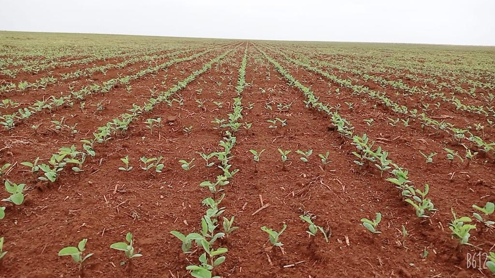

A soja chegou ao Brasil no final do século XIX, trazida por imigrantes japoneses. Inicialmente cultivada em pequena escala no sul do país, demorou décadas para se adaptar ao clima tropical brasileiro.
O grande salto ocorreu na década de 1970, com o desenvolvimento de variedades adaptadas ao cerrado brasileiro. Essa conquista científica, combinada com avanços na mecanização agrícola, transformou o Brasil em um gigante da soja.
Hoje, o Brasil é o maior produtor mundial de soja, com uma colheita que supera 135 milhões de toneladas anuais. A cultura se expandiu do sul para o centro-oeste e norte do país, transformando paisagens e economias regionais.
